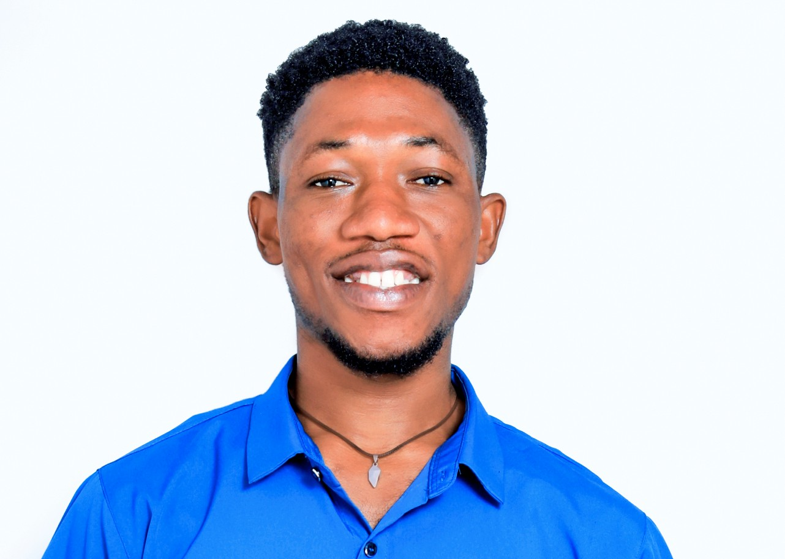

Cooper Kamara
Software Engineer
New Matadi, Sinkor
Expected Salary:
$100,000
Profile
Digital and UI/UX professional with hands-on experience in social media management, website development, and brand visibility strategies. Currently supporting the promotion of Rymax products through G&M General Services in Rwanda. Skilled in creating engaging digital content, improving online presence, and building user-focused platforms that enhance customer engagement and brand growth
Professional Experience
G&M General Services (Rymax Agent) / Rwanda
Digital Marketer
(2022 - Present)
Developed and executed digital marketing strategies to promote Rymax products, resulting in increased brand visibility and customer engagement. Managed social media platforms, creating and curating content that resonated with the target audience, leading to a significant growth in followers and interactions. Collaborated with cross-functional teams to design and implement online campaigns that drove traffic to the website and boosted sales.
G&M General Services (Rymax Agent) / Rwanda
Digital Marketer
(2022 - Present)
Developed and executed digital marketing strategies to promote Rymax products, resulting in increased brand visibility and customer engagement. Managed social media platforms, creating and curating content that resonated with the target audience, leading to a significant growth in followers and interactions. Collaborated with cross-functional teams to design and implement online campaigns that drove traffic to the website and boosted sales.
G&M General Services (Rymax Agent) / Rwanda
Digital Marketer
(2022 - Present)
Developed and executed digital marketing strategies to promote Rymax products, resulting in increased brand visibility and customer engagement. Managed social media platforms, creating and curating content that resonated with the target audience, leading to a significant growth in followers and interactions. Collaborated with cross-functional teams to design and implement online campaigns that drove traffic to the website and boosted sales.
Education
Kigali Independent University
Bachelor of Science in Computer Science
2022 - Present
Pursuing a Bachelor of Science in Computer Science at Kigali Independent University, with an expected graduation date in 2025. The program has provided a strong foundation in programming languages, software development, and computer systems, equipping me with the technical skills necessary for a successful career in the technology industry.
Skills
Digital Marketing
Content Creation
Social Media Management
SEO